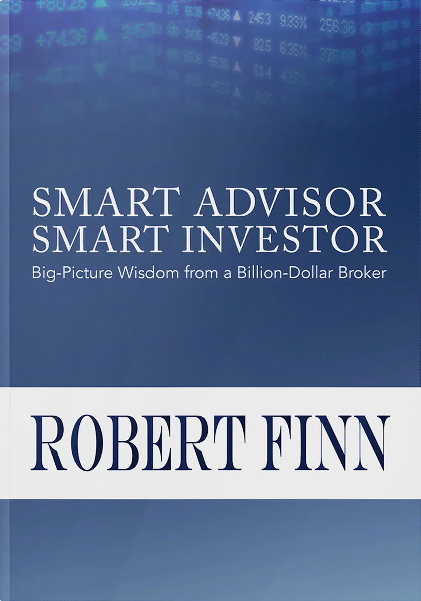
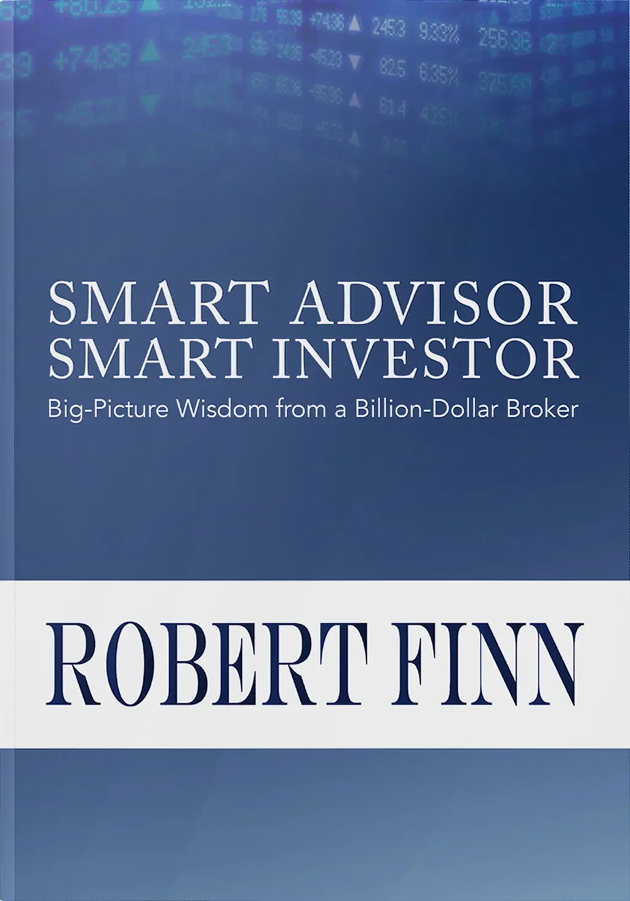

For four weeks, every Sunday morning, Tom Meyer brewed himself a cup of coffee and sat down at his kitchen table to conceptualize and create an illustration for a book on personal finance.

Tom Meyer is a nationally syndicated political cartoonist with a mastery over the power of observational comedy.
Cartoons take up just four pages of this 120 page book, but they have an outsized impact:
- A reader might not always read a full chapter. But with the aid of a cartoon illustration they will understand the main point of the chapter, even when they don't have background on the topic.
- The book carries a sequence of four cartoons, each cartoon nudging the reader along to the next chapter, and helping hold the narrative together. Human beings are hardwired for linear narrative story-telling. A sequence of cartoons makes the text easier to follow, and more memorable.
- The presence of cartoons in a book makes the audience more accepting of the opinions expressed by the author in the written text. The reader experiences an instant sense of relief and gratitude for a light moment in a book on the serious topics of wealth management and estate planning.
The cartoons relax the reader, and diffuse any reluctance to reading through the long text.
- The book’s author expresses strong opinions that differentiate him from the approaches of other financial brokers. The message embedded in a cartoon however, is perceived by the reader to be an unbiased and objective view of a situation.


Why did Tungsten choose to put so much thought into cartoons for this book? Well, cartoons have qualities that make them an ideal medium to reach and influence a wide general public.
But cartoons are also especially suitable when communicating to a target audience of intelligent, educated, social elites: and this was the demographic for the client's financial planning services.
It is rare for an art form to have made an impact academically, culturally, socially, economically, and as commercial art in advertising.
This target audience is familiar with, and even wistful about cartoons. They have grown up with cartoons whether in newspapers or on television. Since their childhoods, they have associated cartoons with laughter, happiness and fun.
Most importantly, the most vital role for cartoons in this book is to unite the readers behind a common point-of-view which the readers collectively share between themselves, and with the author.
The simplicity of cartoons is what makes them so effective for mass communication. The more complex the concept to be communicated, the greater must be the simplicity of the drawing.
For the most part, cartoons are composed of two elements: caricature, which parodies the individual, and allusion, which creates the situation or context into which the individual is placed.

Cartoons use exaggeration for effect, as seen in the physical features of the characters, and the scale of the humor. Yet, a cartoon must make a realistic appeal to the target audience. While this cartoon appears to underplay the severity of a situation, it is actually establishing the severity of that situation.
This sequence of cartoons helps the target audience understand and interpret the landscape of financial services firms. The illustrations appeal to the audiences'past experiences with financial brokers. While this cartoon is a reflection of the general state of the financial industry, the reader‘s state of mind is also reflected in the cartoon.